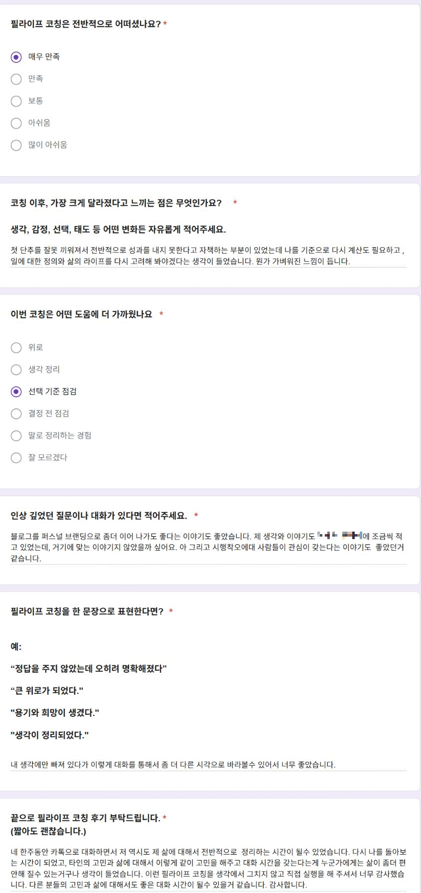
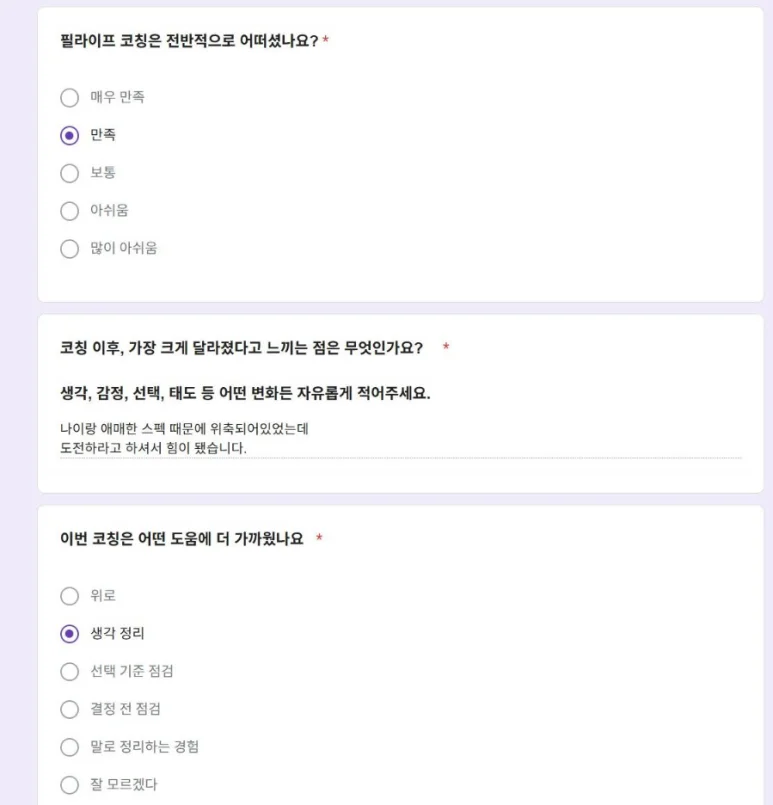
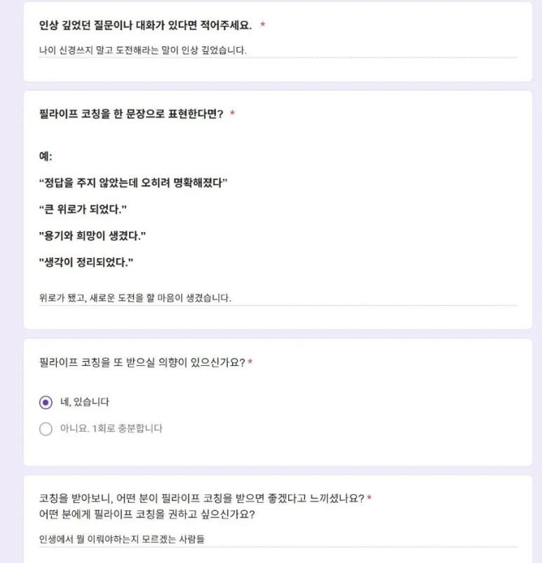
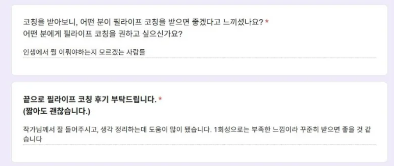
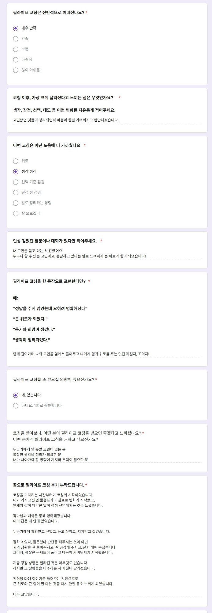
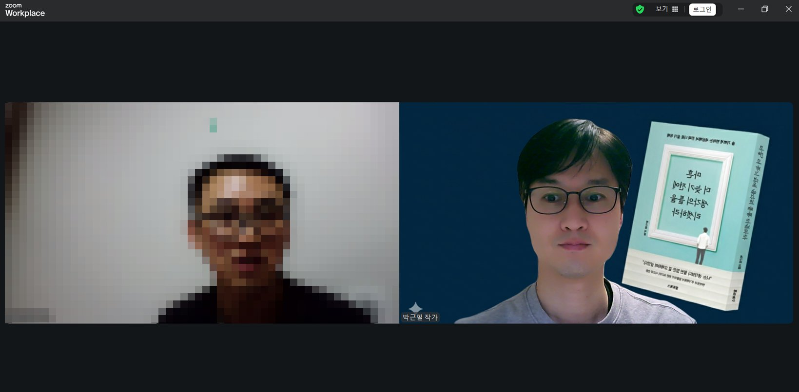
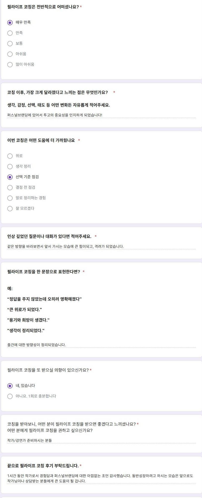

필라이프 코칭을 오픈합니다
저의 새로운 도전은 2026년에도 계속됩니다. 지난해 독저팅, 박근필성장연구소, 필북, 필레터에 이어 올해는 필라이프 코칭을 시작합니다.
필라이프 코칭은 심리 치료나 상담이 아닌, 질문과 대화를 통해 삶의 선택 기준을 정리하는 코칭 프로그램입니다.
필라이프 코칭은 누군가의 삶을 대신 결정해 주는 프로그램이 아닙니다. 지금의 고민이 어디에서 비롯되었는지, 무엇을 오해하고 있는지, 어떤 기준으로 다시 선택해야 하는지를 질문과 대화를 통해 함께 정리해 보는 1:1 코칭 프로그램입니다.
저는 수의사로 임상 현장을 경험했고, 작가로서 수많은 질문을 글과 책으로 정리해왔으며, 강사·강연가로서 사람들의 생각이 바뀌는 순간을 가까이에서 보아왔습니다. 학생 시절부터 지금까지 후배·동갑·선배를 가리지 않고, 주변 사람들이 먼저 고민을 털어놓고 대화를 요청해오는 경우가 많았습니다. 그 경험은 지금까지도 이어지고 있습니다.
필라이프 코칭은 그 경험을 바탕으로 지금까지의 삶을 되짚어보고, 다음 선택을 스스로 할 수 있도록 돕는 대화입니다.
다루는 주제
필라이프 코칭에서는 다음과 같은 고민을 다룹니다.
진행 방식
운영 안내
필라이프 코칭은 파일럿 형태로 시작합니다. 운영을 거듭하며 고민의 범위, 참여자가 체감한 변화와 만족도, 몇 회가 적정한지 등 개입 범위와 진행 방식을 다듬습니다. 추후 경험과 사례가 축적되면 정식 프로그램으로 전환할 계획입니다.
신청 전 안내
신청서로 신청자분의 고민을 충분히 읽어본 뒤, 필라이프 코칭의 방향과 맞는 경우에 한하여 코칭을 진행합니다. 코칭 가능 여부는 신청 내용을 검토한 뒤 개별적으로 안내드립니다.
필라이프 코칭은 빠른 위로나 명확한 정답을 기대하시는 분, 누군가가 대신 결정해 주길 바라는 분께는 맞지 않을 수 있습니다. 이 코칭은 스스로 생각하고, 질문하고, 선택하려는 분께 보다 잘 맞는 프로그램입니다.
코칭과 컨설팅의 차이
코칭과 컨설팅 단어를 많이 들어보셨을 겁니다. 얼핏 보기엔 비슷해 보여 혼용해서 쓰이기도 하지만, 알고 보면 분명한 차이가 있습니다.
코칭
코치는 질문과 대화를 통해 클라이언트가 스스로 문제를 해결할 수 있도록 돕습니다. 보통 관계가 수평적입니다.
컨설팅
컨설턴트는 클라이언트가 의뢰한 분야에 전문가로서, 문제를 진단하고 해결책을 제시합니다. 관계는 상대적으로 수직적입니다.
한 줄로 정리하면 이렇습니다.
코칭은 '답을 찾도록 돕는 일'이고, 컨설팅은 '답을 제공하는 일'입니다.
어제 필라이프 코칭 오픈 소식을 전했습니다. 먼저 분명히 말씀드리고 싶은 게 있습니다.
저는 해당 분야의 전문가는 아닙니다. 누군가의 인생을 설계해 줄 수 있는 사람도 아니고, 정답을 쥐고 있는 사람도 아닙니다.
다만 40년이 넘는 시간을 살면서 크고 작은 파도를 여러 번 마주했고, 육체적으로나 심리적으로 힘든 시기도 겪었습니다. 진로(직업) 문제, 투자 문제, 가족을 포함한 인간관계 문제까지. 이 중 일부는 여전히 현재 진행형입니다. 저도 여러분과 똑같은 사람입니다.
제가 잘나서, 대단해서, 크게 성공해서 필라이프 코칭을 시작한 게 아닙니다. 과거에 힘든 시기를 겪어봤고 지금도 나름의 고민을 안고 살아가고 있기에, 제 경험과 생각을 바탕으로 비슷한 시간을 지나고 있는 분들에게 도움을 드리고 싶습니다.
경청하는 자세는 저의 오래된 강점입니다. 그래서인지 학창 시절부터 지금에 이르기까지 주위 많은 사람의 고민을 들어주었고, 그들은 제게 항상 고마움을 표시했습니다.
다시 한 번 강조하지만 필라이프 코칭은 심리 치료나 심리 상담이 아닙니다. 명쾌한 솔루션을 드리는 자리도 아닙니다. 질문과 대화를 통해 지금의 고민이 어디에서 비롯되었는지, 무엇을 오해하고 있는지, 앞으로 어떤 기준으로 선택하면 좋을지를 함께 정리해 보는 시간입니다.
감사하게도 오픈하자마자 몇 분이 신청을 해주셨습니다. 일정을 조율해 이번 달에 코칭을 진행할 예정입니다.
필라이프 코칭의 문을 두드리는 일을 두려워하거나 부끄러워하지 않으셔도 됩니다. 우리 삶의 문제들 중에는 혼자서는 풀긴 어렵지만, 누군가와 차분히 이야기 나누다 보면 의외로 실마리가 보이는 것들이 많습니다.
첫 필라이프 코칭 진행
첫 필라이프 코칭을 진행했습니다. 사전에 일정을 조율하고 줌(ZOOM)으로 약 한 시간 가까이 대화를 나눴습니다. 일방적으로 저의 생각을 말하거나 솔루션을 제시하는 시간이 아닙니다. 서로 묻고 생각하고 답하는 과정에서, 현재 클라이언트가 겪는 문제의 원인과 앞으로 나아갈 방향을 함께 모색하는 시간입니다.
다음은 코칭 후 클라이언트의 후기입니다.
이미지를 클릭하면 크게 볼 수 있습니다.

고민이 있는데 해결 방향이 보이지 않아 막막하다면 필라이프 코칭 문을 두드리세요. 생각지도 못한 해결의 실마리를 찾을 수도 있습니다.
'천직'에 관한 고민
필라이프 코칭 케이스 소개입니다. 이 분의 고민을 한 줄로 요약하면, "'천직'을 찾고 싶다"입니다. 현재 하고 계신 업무가 본인의 성향, 가치관과 맞지 않는 게 가장 큰 문제였습니다.
줌으로 대화를 나누기 전, 신청서와 1:1 톡으로 필요한 사전 정보를 얻습니다. 이것을 토대로 약 한 시간 정도 여러 질문을 드리고 경청하고 제 생각도 보태드립니다.
이 과정에서 클라이언트는 생각이 정리되고, 미처 몰랐거나 무심코 지나쳤던 걸 알게 됩니다. 문제의 원인이 무엇이었는지, 앞으로 어떤 선택을 하면 좋을지 기준과 방향도 알 수 있습니다.
얼마큼 좋은 질문을 하냐에 따라 코칭의 질이 달라집니다. 질문력, 다른 말로 문해력입니다. 클라이언트의 상황과 맥락에 대한 이해가 필수입니다.
다음은 코칭 후 클라이언트의 후기입니다.
이미지를 클릭하면 크게 볼 수 있습니다.



고민이 있는데 해결 방향이 보이지 않아 막막하다면 필라이프 코칭 문을 두드리세요. 생각지도 못한 해결의 실마리를 찾을 수도 있습니다.
물음표가 마침표로 변하는 시간
이번에 코칭을 의뢰한 분의 고민은 이렇습니다.
1. 직장일과 육아를 병행하다 보니 도저히 독서와 글쓰기를 할 시간이 나지 않는다. 직장 다니는 남들은 일과 육아를 하면서도 열심히 자기 계발을 하며 사는 것 같은데, 그들은 어떻게 그것이 가능한지, 내가 문제인 건지 궁금하다.
2. 현재 하고 있는 일을 계속 해나가는 게 맞는지 잘 모르겠다. 내가 뭘 좋아하고 뭘 하고 싶은지도 모르겠다.
우리들 사는 모습은 비슷합니다. 그래서 각자 하는 고민도 비슷하지요. 이 분의 고민을 쭉 듣다 보니 마치 제 얘기를 하는 것 같은 부분이 많았습니다. 그래서 공감이 더 되었습니다.
질문과 대화, 그리고 저의 생각 한 스푼. 필라이프 코칭은 이렇게 이뤄집니다.
한 시간 정도 밀도 높은 대화를 나누고 코칭을 마쳤습니다. 만족도가 높으셔서 저도 큰 보람을 느꼈습니다.
다음은 코칭 후 클라이언트의 후기입니다.
이미지를 클릭하면 크게 볼 수 있습니다.

고민이 있으시다면 언제든 필라이프 코칭의 문을 두드리세요. 여러분을 기다리고 있겠습니다.
내 고민을 남들도 했거나 하고 있을 가능성이 높습니다
이번에 코칭을 의뢰한 분과의 주요 대화 내용입니다.
1. OO 분야에 관심이 많다. 깊이 공부하고 꾸준히 책도 내고 싶다.
2. 작가님처럼 직장을 다니며 병행하고 싶다.
3. 작가님은 본업을 유지하면서 다양하게 왕성한 활동을 하시는 비결이 궁금하다.
4. 그 외.
대화를 쭉 나누다 보니 관심 있는 분야가 낯설지 않았습니다. 저도 몇 년 전 깊이 공부했던 분야였죠. 서로 반가워하며 관련 이야기를 주고받았습니다. 응원도 해드렸죠.

그 외 고민, 책쓰기 관련 궁금증 등에 관해서도 깊은 대화를 나눴습니다.
현재 내가 골똘히 하고 있는 고민이 나만의 고민이 아닐 가능성이 높습니다. 남도 과거에 했던 고민이거나 현재 나와 똑같이 하고 있는 고민일 수 있죠.
그런 사람과 고민을 공유하고 해결책을 함께 찾아보는 건 의미 있는 일입니다. 필라이프 코칭이 바로 그런 시간입니다.
다음은 코칭 후 클라이언트의 후기입니다.
이미지를 클릭하면 크게 볼 수 있습니다.

고민이 있으시다면 언제든 문을 두드리세요. 여러분을 기다리고 있겠습니다.
사람이 뇌과학적으로 행복할 수 있는 유일한 길은
남을 행복하게 해주는 것이라고 합니다.
필라이프 코칭으로 저와 여러분 모두 행복해지길 진심으로 바랍니다.